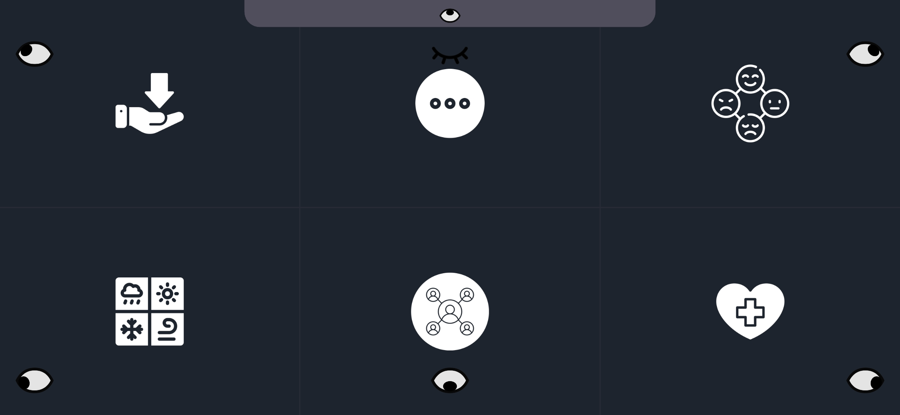

Our Solution: Irisense
Çözümümüz: Irisense
We have developed a mobile application that turns any standard smartphone into a powerful eye-tracking communication device. It requires no extra hardware and uses the front camera to track eye movements with high precision.
Herhangi bir standart akıllı telefonu güçlü bir göz takip cihazına dönüştüren mobil bir uygulama geliştirdik. Ek donanım gerektirmez ve yüksek hassasiyetle göz hareketlerini takip etmek için ön kamerayı kullanır.
By integrating Large Language Models (LLM) like Gemini and ChatGPT, users don't just type letter-by-letter. They select keywords, and our AI generates full, context-aware sentences to be spoken aloud.
Gemini ve ChatGPT gibi Büyük Dil Modellerini (LLM) entegre ederek, kullanıcıların sadece harf harf yazmasının önüne geçtik. Kullanıcılar anahtar kelimeleri seçer, yapay zekamız bağlama uygun tam cümleler oluşturur ve seslendirir.


Project Presentation Video
Proje Sunum Videosu